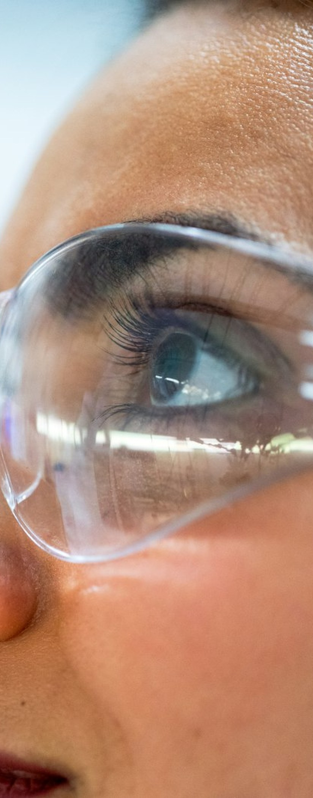

@fairhealth.br08/08
Comente CUIDADO
e receba o guia
de NR-01.
Precisa de ajuda agora? CVV 188.
546,2
mil
no Brasil em 2025, concedidos pelo INSS.
E agora, RH?
Fonte: Ministério da Previdência Social
e por que a planilha
sozinha não resolve.
→
o segundo recorde seguido.
472,3 mil
546,2 mil
2024
2025
Licenças por transtornos mentais e comportamentais concedidas pelo INSS.
Fonte: Ministério da Previdência Social

NR-01
Desde maio de 2026, a NR-01 pede que a empresa identifique e gerencie os riscos psicossociais, junto com os outros riscos ocupacionais.
Fonte: NR-01, Ministério do Trabalho e Emprego
risco psicossocial
Sobrecarga
Metas sem clareza
Falta de apoio
Conflitos e assédio
Jornada sem pausa
é o começo.
Reduzir o risco pede gente perto:
→ escuta
→ acompanhamento
→ encaminhamento
a próxima reunião de RH
Onde a sobrecarga aparece primeiro?
A quem o colaborador recorre
quando não está bem?
Que indicador mostra
se melhorou?
e receba o guia
Precisa de ajuda agora? CVV 188.